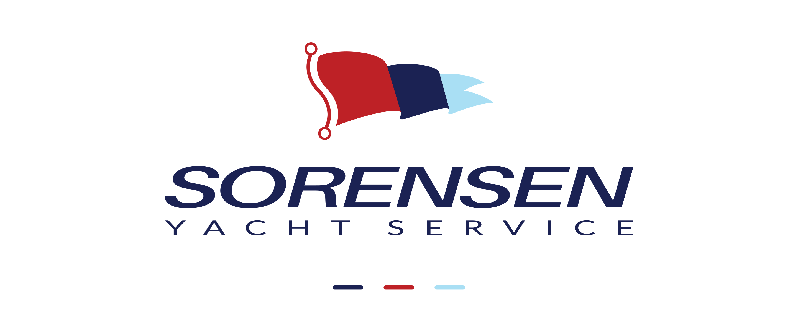
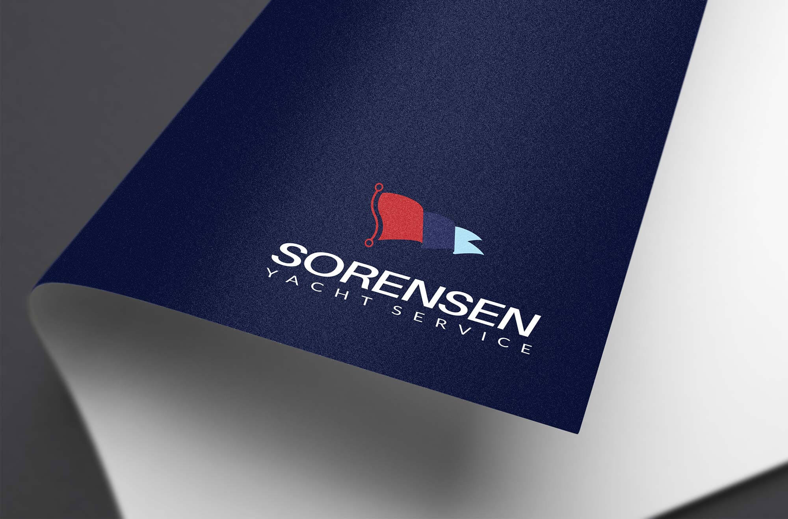

Sorensen Yacht Service

Introduction
Sorensen Yacht Service specializes in premium marine electrical work and refits. The identity needed to signal nautical heritage and technical precision. I designed a flag-forward mark that integrates an electrical switch detail—connecting maritime tradition with modern engineering—and a wordmark that reads cleanly from hull decals to invoices.
The Challenge
Create a logo that feels classic enough for the marina yet technical enough for electrical diagnostics. The identity had to be:
- Nautical and credible: A respectful nod to signal flags and maritime craft.
- Technical and modern: Elements that reference electrical systems without becoming kitsch.
- Highly legible: Clear at small sizes on equipment labels, parts, and uniforms.
Design Approach
Symbolism: A signal-style pennant is mounted to a simplified electrical switch. The negative space between the mast and flag forms a subtle “S” for Sorensen.
Color palette: Deep navy for professionalism, signal red for visibility at distance, and light aqua for a fresh marine accent. The set provides strong contrast on both light and dark backgrounds.
Typography: A sturdy, modern sans serif complements the geometry of the icon. Spacing and weight were tuned for small-format clarity on tools and tags.
System thinking: Horizontal, stacked, and icon-only variants with clear-space and minimum-size guidance ensure consistent use across vessels, apparel, and web.
The Process
- Discovery: Surveyed marine brands to avoid cliché anchors and wheels; focused on signal language and instrumentation.
- Sketching: Iterated flag profiles, mast angles, and switch silhouettes to reveal a clean “S”.
- Vector refinement: Adjusted counters, stroke joins, and flag curvature for optical balance and small-size performance.
- Systemization: Built usage rules so vendors can reproduce the mark accurately across vinyl, embroidery, and print.
Final Outcome
- Distinctive mark blending nautical signaling with electrical expertise.
- Versatile lockups and a high-contrast palette for on-water legibility.
- Consistent application across hull decals, apparel, invoices, and web.
The result gives Sorensen Yacht Service a confident, ownable identity—refined enough for discerning owners and practical for everyday marine operations.

